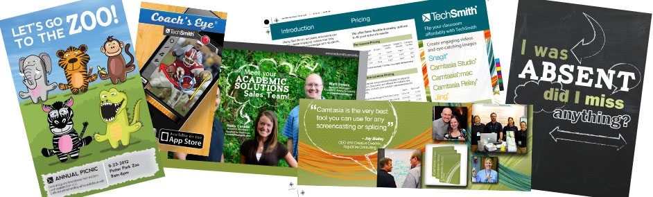
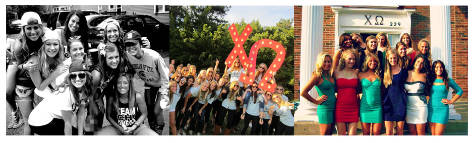

I attended Haslett Public Schools from pre-school through high school. They offered me a excellent education, as well as amazing friends and role models. It was here where I discovered my love for design and being creative through the art, yearbook, and tv production classes I took. When I was younger I never would have imagined this would be the career I would be pursuing, but with the advances in our technological world, I am not worried about not being able to get a job in the future. Haslett really did help me to be motivated and want to do amazing things in my life.

I have worked and held steady jobs since the day I turned 16. I started by working a typical college job by working at a retail store called PacSun in the Meridian Mall, and as a hostess at a restaurant called Wild Winds (which was replaced by the newest Leo's). These jobs taught me the importance of working, bring responsible, and being a good employee. I then was employed by the MSU Federal Credit Union right out of high school. I worked in their Contact Center, and was responsible for helping credit union members with any questions or problems they may be having with their account. This job provided me with an level of knowledge about the banking industry as well as all aspects of the credit union business, and I learned a endless amount about helping customers, conflicts, and having a real adult job. This past May I started my currect job with TechSmith Corporation as a graphic design intern. It is so great working somewhere where I am excited to go, and truly love the projects I am working on. I am not treated like a intern in the slightest way, and I know the work I do is being placed directly into the hands of our customers. I am working 30 hours a week here on top of a full school course load,so it is definitely keeping me busy!
Feel free to click here to view my resume!
